Cap. 4 Estatística Descritiva
Objetivos do capítulo
1. Introduzir conceitos importantes em estatística descritiva
2. Apresentar tabelas e gráficos
3. Apresentar funções do dplyr e ggplot
4. Apresentar um módulo específico do JASP
5. Sugerir heurísticas ou regras gerais na criação de gráficos
Quando pesquisadores e acadêmicos fazem seus estudos, com muita frequência, eles obtêm um grande conjunto de dados, sendo pouco informativo ou até mesmo inviável apresentar detalhadamente todos eles. A estatística descritiva oferece uma diversidade de ferramentas que auxiliam a organizar, descrever, resumir e apresentar os dados obtidos, de forma que os resultados sejam mais fáceis de serem compreendidos e analisados e, consequentemente, que a pesquisa possa ser melhor compreendida por todos os seus leitores.
Atenção: A estatística descritiva dispõe de inúmeras ferramentas para auxiliar na gestão e apresentação de dados.
Frequentemente, a massa de dados obtidos em uma pesquisa (realização) é resumida por alguns números específicos, que possuem certas propriedades estatísticas, e conseguem sintetizar adequadamente o volume de dados. Por sua vez, esses números são úteis em análises que possam ser necessárias e serão descritos em outra seção deste capítulo.
Na apresentação dos dados, é possível utilizar informações textuais, tabelas e gráficos. Tabelas e textos permitem agrupar e detalhar os resultados e, com isso, torná-los mais precisos e detalhados. Entretanto, esse aprofundamento pode também dificultar o entendimento geral do estudo. Por sua vez, gráficos geram sumários descritivos, em que é possível ter um entendimento rápido dos principais resultados. Eles também podem incorporar elementos adicionais, que possibilitam uma primeira análise inferencial, tal como barras de erro e intervalos de confiança. Dependendo do tipo de gráfico, além da apresentação de resultados descritivos, é possível também expor diferenças entre grupos ou relações entre variáveis.
Apesar dessas vantagens, algumas limitações podem ser encontradas nos gráficos. Uma vez que os eles condensam um grande conjunto de resultados em uma apresentação mais simples, eles podem dificultar um pouco no entendimento geral das conclusões obtidas pela pesquisa e, ocasionalmente, distorcer os resultados.
No geral, cada uma dessa formas de apresentar os resultados de uma pesquisa traz consigo vantagens e desvantagens, listadas a seguir:
| Tabelas | Gráficos |
|---|---|
| Vantagens | |
| Auxiliam a organizar os resultados | Condensam vários resultados |
| Permitem detalhar e aprofundar os resultados | Auxiliam a identificar padrões nos resultados |
| Apresentam os resultados de maneira mais precisa | Auxiliam a visualizar o relacionamento entre variáveis |
| Buscadores (google, etc) encontram os resultados | Permitem confirmar ou não suposições incialmente feitas sobre os dados |
| Fáceis de serem entendidos quando bem feitos | |
| Limitações | |
| Podem dificultar o entendimento dos resultados | Podem simplificar demasiadamente os resultados |
| Podem distorcer severamente os resultados quando mal feitos |
É importante atentar que em todas estas técnicas, mas especialmente nas gráficas, deve-se evitar gerar distorções ao entendimento e interpretação dos resultados. Há casos de pessoas e profissionais que chegaram a sofrer sanções jurídicas por distorções intencionais em apresentação estatísticas. Há recomendações nacionais e internacionais que visam auxiliar no desenvolvimento de gráficos e tabelas e, com grande frequência, periódicos e editoras também exigem formatos específicos na apresentação dos resultados.
4.1 Tabelas
As tabelas são recursos estatísticos que permitem a apresentação dos resultados de uma pesquisa de maneira resumida, reunida e objetiva. É possível utilizá-las para apresentação de apenas uma ou múltiplas variáveis, que podem ser categóricas ou contínuas. Todas as tabelas precisam de títulos e, eventualmente, algumas notas podem auxiliar no entendimento dos resultados.
O formato padronizado para desenvolvimento de tabelas costuma variar de revista para revista No entanto, é possível notar que, quase sempre, os números são arredondados em 2 casas decimais e apenas as linhas possuem bordas. A imagem abaixo apresenta uma tabela construída pelas recomendações da American Psychological Association (APA).
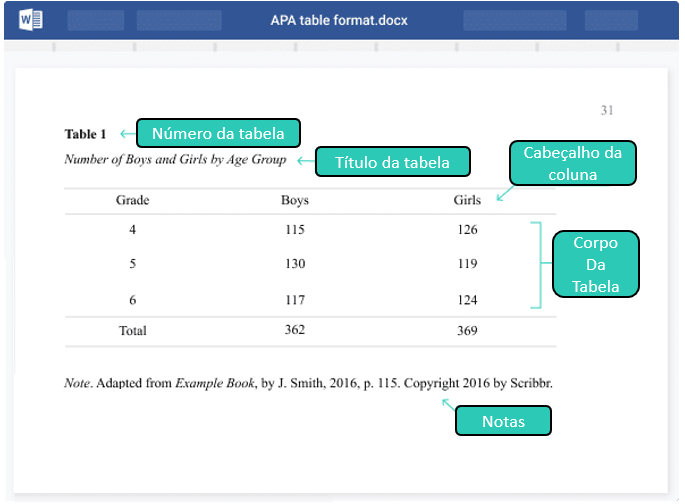
4.2 Gráficos
Gráficos são representações visuais utilizadas para exibir dados. Da mesma forma que tabelas, eles podem ser formados por uma ou múltiplas variáveis. Quando uma única variável é apresentada em um gráfico, sua finalidade tende a ser apenas descritiva. Quando duas ou mais variáveis são apresentadas, eles auxiliam a comparar os resultados entre grupos ou explorar o relacionamento entre variáveis.
Se bem feitos, os gráficos são extremamente úteis e auxiliam o rápido entendimento dos resultados obtidos em uma pesquisa. Como aponta Morettin e Bussab (2010), eles possibilitam:
- Buscar padrões e relações;
- Confirmar (ou não) certas expectativas que se tinha sobre os dados;
- Descobrir novos fenômenos;
- Confirmar (ou não) suposições feitas sobre os procedimentos estatísticos usados; e
- Apresentar resultados de modo mais rápido e fácil.
É sempre importante que o gráfico tenha um título e uma escala e, quando necessário, notas complementares.
A maioria dos gráficos são construídos em um plano com um eixo horizontal (abscissas) e um vertical (ordenadas). Quando há apenas uma variável para apresentar, o eixo X irá reunir os níveis ou possíveis valores desta variável, enquanto o eixo Y irá apresentar suas contagens, proporções ou densidade. Quando há duas variáveis, o eixo X será utilizado para apresentar os níveis ou possíveis valores da variável independente, enquanto o Y apresentará os valores médios encontrados na variável dependente, tal como apresentado a seguir.
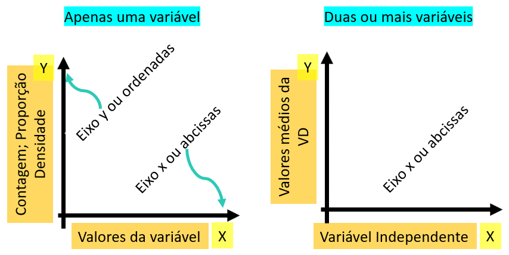
Quando há mais de uma variável independente, um agrupador ou cluster deverá ser apresentado. Com frequência, o eixo X recebe a variável independente com mais níveis, enquanto o agrupador recebe as outras. A imagem a seguir descreve este cenário.
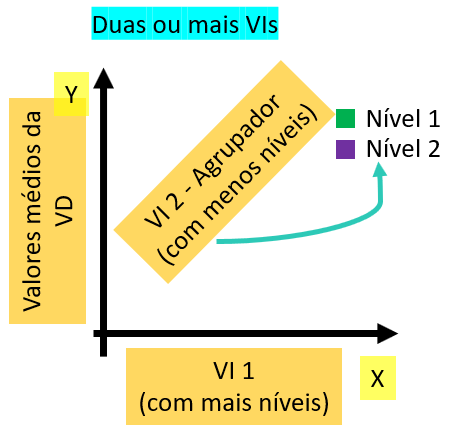
Há diferentes heurísticas que auxiliam na escolha de um gráfico adequado para apresentar os resultados de uma pesquisa. De forma geral, essa escolha pode ser pautada por duas perguntas:
- Quantas variáveis serão apresentadas ?
- Qual o nível de medida da variável (ou variável independente quando há duas ou mais)?
Com isso, o diagrama abaixo oferece uma árvore de decisão funcional.
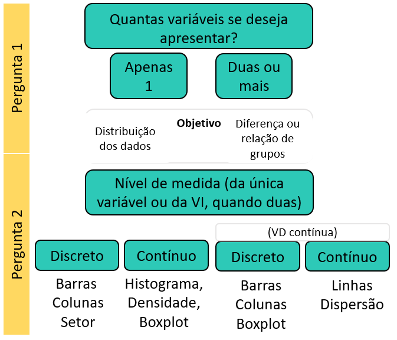
Nota: Nessa apresentação, pragmaticamente as variáveis categóricas são tratadas como discretas.
A imagem a seguir ilustra alguns desses gráficos. Suas características serão apresentadas em seguida.

A apresentação de gráficos tende a seguir um desenvolvimento hierárquico. Inicialmente, gráficos univariados para variáveis categóricas e contínuas são criados. Em seguida, gráficos apresentando diferenças e relações entre grupos e variáveis são feitos. Na seção Pesquisa, diferentes gráficos serão gerados para ilustrar o processo.
4.3 Medidas de posição e dispersão
Uma vez que é pragmaticamente inviável apresentar detalhadamente todos os dados obtidos em uma pesquisa, há um conjunto de números podem ser utilizados para resumir todo o conjunto. Eles costumam ser chamados de números-síntese, medidas resumo, medidas estatísticas ou apenas estatísticas e podem ser agrupados em medidas de posição e medidas de dispersão, que serão descritas a seguir.
Medidas de posição: São valores que representam a concentração dos dados observados. Podem ser divididas em medidas de tendência central, medidas separatrizes e medidas de posição relativa.
As medidas de tendência central (MTC) indicam o valor em torno do qual uma grande proporção de outros valores está centralizada. As MTC mais usadas são a moda, a média e a mediana.
As separatrizes também são chamadas de quantis ou medidas de ordenamento. Elas são valores que indicam posições em uma distribuição ordenada acumulada dos dados. Os principais quantis utilizados são os quartis (divisão dos dados em 4 partes iguais), decis (divisão em 10 partes iguais) e percentis (divisão em 100 partes iguais).
As medidas de posição relativa são as vezes chamadas de Escore padrão. Elas são valores que indicam as posições que cada valor do conjunto de dados em relação a todos os dados. O Escore Z, o Escore T e o Escore QI tendem a ser classificados como como medidas de posição de relativa e são bastante utilizados em Psicometria.
É possível notar que essa divisão tão detalhada pode gerar inconsistências e é raramente utilizada na prática. No dia a dia, as medidas de tendência central abrangem pragmaticamente todas as medidas de posição.
Medidas de dispersão : Também chamadas de medidas de variabilidade ou afastamento. São valores que indicam o quão dispersa se encontra a distribuição dos valores em relação à alguma medida de tendência central. Entre as medidas de dispersão, estão a amplitude, a amplitude (ou intervalo) interquartil, a variância, o desvio-padrão e o coeficiente de variação. Em Psicologia, o desvio-padrão e a amplitude interquartil (também chamado de intervalo interquartil) são as mais utilizadas.
O diagrama abaixo apresenta estas informações.
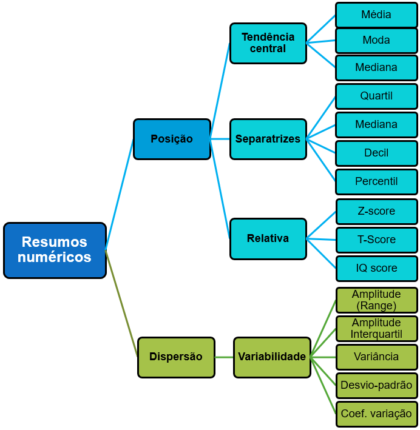
Como previamente comentado, esse detalhamento tem pouco sentido prático na maioria das pesquisas. Apenas em raras exceções, como em Psicometria, é que discussões sobre percentis e Escores Z são feitas. Assim, apesar do esforço feito para reunir as principais medidas estatísticas utilizadas, a organização apresentada no diagrama a seguir traz maior utilidade.

As principais medidas serão agora apresentadas de uma maneira simples. Esse formato é proposital, uma vez que a proposta do livro é discutir tais conceitos pela apresentação de pesquisas específicas e previamente publicadas.
4.4 Média
A média é a MTC mais comum e mais intuitiva. Seu valor representa o “centro de gravidade” da distribuição, descrevendo a maior concentração dos valores em torno dela. Assim, ela resume o conjunto de dados e pode ser utilizada para substituir os outros valores, o que é especialmente útil quando há casos ausentes.
Para ilustrar, imagine a seguinte situação: 10 pacientes foram avaliados por um teste de inteligência e apresentaram os resultados abaixo descritos:
90.6, 102.8, 87.47, 123.9, 104.9, 87.69, 107.3, 111.1, 108.6, 95.42 and 122.7
A média indicará o valor central da distribuição em relação à distância entre os outros valores.
103.9
Caso uma tabela seja apresentada e nela seja calculada a distância de todos os valores em relação à média, os resultados seriam assim:
| Resultado | media | distancia |
|---|---|---|
| 90.6 | 103.9 | -13.26 |
| 102.8 | 103.9 | -1.11 |
| 87.47 | 103.9 | -16.4 |
| 123.9 | 103.9 | 20.06 |
| 104.9 | 103.9 | 1.078 |
| 87.69 | 103.9 | -16.17 |
| 107.3 | 103.9 | 3.447 |
| 111.1 | 103.9 | 7.211 |
| 108.6 | 103.9 | 4.772 |
| 95.42 | 103.9 | -8.445 |
| 122.7 | 103.9 | 18.81 |
Somando as distâncias, o resultado será 0, indicando que elas se anulam e que a média é o centro da distribuição.
| Resultado | media | distancia |
|---|---|---|
| 90.6 | 103.9 | -13.3 |
| 102.8 | 103.9 | -1.1 |
| 87.5 | 103.9 | -16.4 |
| 123.9 | 103.9 | 20.1 |
| 104.9 | 103.9 | 1.1 |
| 87.7 | 103.9 | -16.2 |
| 107.3 | 103.9 | 3.4 |
| 111.1 | 103.9 | 7.2 |
| 108.6 | 103.9 | 4.8 |
| 95.4 | 103.9 | -8.4 |
| 122.7 | 103.9 | 18.8 |
| Total | - | 3.109e-15 |
A tabela a seguir apresenta algumas características vantajosas e possíveis limitações da média.
| Vantagem | Limitação |
|---|---|
| É intuitiva | Sensível |
| Algebricamente tratável | Não adequada a dados nominais |
| Estimador não viesado | |
| Sensível |
Nota: Uma medida sensível significa que ela é influenciada por todos os outros valores.
Exemplo de aplicações: Praticamente, em todas as pesquisas se utiliza a média para resumir o volume de dados obtidos. Como exemplos em Psicologia, a média de valores de inventários e testes psicológicos, a média do tempo de reação que um participante demora para responder à uma atividade específica e a média de consultas clínicas que em média um profissional realiza.
4.5 Mediana
A mediana é uma medida que representa o centro do conjunto de dados quando se considera a quantidade de elementos presentes. Portanto, a mediana divide a quantidade de dados em duas partes iguais, em que 50% dos dados estão abaixo dela e 50% dos dados estão acima dela. A mediana pode ser classificada tanto como uma medida de tendência central, como uma separatriz (Aguiar Neto, 2010).
Dessa forma, os resultados da mediana são iguais aos resultados do 2º quartil, 5º decil e percentil 50. Comparada com a média, os resultados obtido pela mediana são mais robustos ou resistentes aos valores atípicos ou anômalos, apesar de menos intuitivos.
Para dividir a distribuição em duas partes iguais, a realização da mediana precisa de alguns procedimentos. Repare que abaixo estão os mesmos resultados apresentados na seção da média:
90.6, 102.8, 87.47, 123.9, 104.9, 87.69, 107.3, 111.1, 108.6, 95.42 and 122.7
Para o cálculo da mediana, é necessário organizar essa série de valores de maneira ascendente (chamado de rol) e localizar o resultado ao centro. Nesse caso, o valor ao centro é 104.9 . Note que este valor divide os dados em duas partes iguais de elementos abaixo ou acima dele.
87.47, 87.69, 90.6, 95.42, 102.8, 104.9, 107.3, 108.6, 111.1, 122.7 and 123.9
Caso a quantidade de elementos seja ímpar, a localização da mediana é mais fácil. Caso esta quantidade seja par, a mediana será calculada pela média aritmética dos dois elementos centrais.
A tabela a seguir descreve algumas características vantajosas e possíveis limitações da mediana.
| Vantagem | Limitação |
|---|---|
| Resistente a valor anômalos/Outliers | Não representa todos os valores |
| Adequada para dados ordinais, intervalares e de razão | Não adequada a dados nominais |
| Pouco adequada a tratamentos algébricos futuros |
Exemplo de aplicações: Situações em que a distribuição é muito assimétrica. Variáveis econômicas como salário e pobreza costumam trabalhar com a mediana dos dados.
4.6 Moda
A moda é a realização mais frequente de um conjunto de dados. Salvo algumas exceções, a moda não costuma ser utilizada em análises estatísticas, uma vez que representa mal o conjunto de dados.
Exemplo de aplicações: Situações em saúde pública, como a idade mais típica que uma menina tem o primeiro filho, dia e/ou horário modal de admissão em um hospital. Situações econômicas de determinação de salários mínimos, eventualmente, também pode contar com resultados modais.
4.7 Amplitude
A amplitude é uma medida de dispersão que indica a variabilidade dos dados. O procedimento para seu cálculo é a subtração entre o maior e o menor valor de um conjunto de dados.
4.8 Amplitude interquartil
A amplitude interquartil também é chamada de intervalo interquartil. Essa medida apresenta a variabilidade dos dados de maneira insensível a valores extremos. Ela é computada pela subtração do primeiro quartil (Q1) pelo terceiro quartil (Q3), ou seja, Q3-Q1. Os quartis são medidas que indicam posições de separação no conjunto ordenado de dados.
O primeiro quartil indica o valor onde estão até 25% dos dados, o segundo quartil tem o mesmo valor da mediana e o terceiro quartil indica o valor onde estão até 75% dos dados.
Como a amplitude interquartil considera apenas a variabilidade em torno do centro, ela é uma medida considerada mais estável ou robusta quando comparada a outras medidas de dispersão.
4.9 Variância e Desvio-padrão
A variância e o desvio-padrão são duas medidas de dispersão frequentemente utilizadas em estatística de maneira intercambiável.
A variância indica a variabilidade quadrática de um conjunto de dados, considerando todos os valores da distribuição. Pela sua estrutura matemática, seu resultado expressa o desvio quadrático médio e, com isso, seu valor não está na mesma unidade dos dados originais.
A variância é uma medida fundamental no estudo das famílias de distribuições de probabilidades e análises estatísticas. No entanto, na prática, ela é pouco usada para descrever a variabilidade dos dados e acaba sendo usada apenas de forma transitória para o cálculo do desvio-padrão.
O desvio-padrão indica a variação dos valores em torno da média, e como seus resultados são calculados pela raiz quadrada da variância, o desvio-padrão está na mesma unidade dos dados originais. Dessa forma, o desvio-padrão tem uma melhor característica descritiva.
Em síntese, enquanto a variância possui maior importância em aspectos matemáticos relacionados às famílias de distribuições de probabilidade, o desvio-padrão tem melhor adequação descritiva de um conjunto de dados. Conceitualmente, as equações a seguir descrevem à variância amostral (à esquerda) e o desvio-padrão amostral (à direita):
\[\begin{equation} \begin{split} S^2 = \sqrt\frac{\sum\limits_{i=1}^N (X -\mu)^2}{N-1} \end{split} \qquad\qquad \begin{split} S = \frac{\sum\limits_{i=1}^N (X -\mu)^2}{N-1} \end{split} \end{equation}\]
Após estas apresentações teóricas, espera-se que seja possível apresentar a pesquisa a seguir, bem como implementar parte dos conceitos nos dados obtidos.
4.10 Momentos estatísticos
O conceito de momentos em estatística é bastante útil para destacar um conjunto de fórmulas que permitem descrever o conjunto de dados obtidos em uma pesquisa (Jenkins-Smith et al., 2017). Tecnicamente, ele resume o que foi apresentado separadamente nas medidas de posição e dispersão. Por eles serem descritos em formato analítico, acabam sendo pouco comentados em Psicologia, infelizmente.
- A média (valor esperado) \(E[X]\):
\[E(X) = \bar{X}=\frac{\sum X_{i}}{n}\]
- Variância amostral (\(S^2\)):
\[s^{2}_{x}=\frac{\sum (X-\bar{X})^{2}}{(n-1)}\]
- Assimetria (\(AS\)):
\[AS = \frac{\sum (X-\bar{X})^{3}}{(n-1)}/\sigma^3 = \frac{1}{n-1} *\frac{\sum (X-\bar{X})^3}{\sigma^3}\]
Caso o Coeficiente de Assimetria seja igual a 0, não há assimetria.
- Curtose (\(K\)):
\[K = \frac{\sum (X-\bar{X})^{4}}{(n-1)}/\sigma^4= \frac{1}{n-1} *\frac{\sum (X-\bar{X})^4}{({\sigma^2})^2}\]
Indica o achatamento. Caso o Coeficiente de Kurtose seja igual a 3, o formato da distribuição é simétrico ou Mesocúrtica. Caso seja menor do que 3, ela tem formato platicurtico (baixa com caudas curtas) e acima de 3 o formato é leptocurtico (alta com caudas longas).

Coletaral a apresentação, o surgimento do termo “momentos estatísticos” parece ter surgido de trabalhos de Pearson em física, especialmente sobre elasticidade, inércia e momentos de ruptura (David, 1998)
4.11 Pesquisa
A base desta pesquisa está disponível em formato R (Rdata) e em CSV, que é lido pelo JASP. Clique na opção desejada.
Base R: Base R - Pesquisa mapfre.RData
Base JASP: Base CSV - dataset_mapfre
Neste capítulo, vamos utilizar a pesquisa intitulada “Depression and Anxiety Symptoms in a Representative Sample of Undergraduate Students in Spain, Portugal, and Brazil”. Nessa pesquisa, sou o coautor e o pesquisador responsável para correspondência. O objetivo deste estudo foi desenvolver um mapa epidemiológico de sintomas de ansiedade e depressão em universitários em três países, bem como investigar possíveis relações entre tais condições de saúde e fatores sociodemográficos. Para acessar eventuais transtornos depressivos, o Inventário Beck de Depressão (BDI) foi utilizado e para acessar condições de ansiedade, o Inventário Beck de Ansiedade (BAI) foi utilizado. Em ambos os inventários, valores altos sugerem que condições de agravo à saúde mental podem estar presentes.
Um diferencial importante do trabalho foi a seleção amostral. Partiu-se de uma amostra estratificada (probabilística) dos estudantes de três universidades, PUC-Rio (Brasil), Universidade de Extremadura (Espanha) e Universidade de Coimbra (Portugal). Isso permitiu ter maior validade externa dos resultados.
4.12 Execução no R
Inicialmente, é necessário carregar a base de dados previamente descrita para o ambiente R. Este procedimento será necessário para todos os capítulos do livro.
Frequentemente, uma primeira tabela informativa começa descrevendo as variáveis categóricas, que deve apresentar suas contagens e proporções. Nesta pesquisa de agora, tanto a variável country como sex são categóricas e serão utilizadas.
como três países fizeram parte da pesquisa, os dados serão agrupados por eles. O desenvolvimento desta tabela pode ser feito com pacote janitor, tal como demonstrado a seguir.
Dataset %>%
tabyl(country) %>%
adorn_totals() %>%
pander()| country | n | percent |
|---|---|---|
| SPAIN | 1216 | 0.6214 |
| PORTUGAL | 426 | 0.2177 |
| BRAZIL | 315 | 0.161 |
| Total | 1957 | 1 |
A adição de um outro agrupador relacionado ao sexo é também importante. Note que existem casos ausentes nesta variável. Isso ocorre com bastante frequência e há diferentes estratégias para lidar com isso, que serão discutidas em momento oportuno. Para que valores ausentes não sejam apresentados, a função filter será implementada. É importante atentar que os dados ausentes não foram excluídos. Eles apenas não são apresentados.
Dataset %>%
filter(!is.na(sex)) %>%
tabyl(sex, country) %>%
adorn_totals() %>%
pander()| sex | SPAIN | PORTUGAL | BRAZIL |
|---|---|---|---|
| M | 384 | 203 | 149 |
| F | 825 | 223 | 166 |
| Total | 1209 | 426 | 315 |
Para apresentar a quantidade total de participantes, bem como a quantidade e a porcentagem de homens e mulheres por país, a codificação torna-se um pouco mais densa. A tabela a seguir reproduz parcialmente a tabela 1 do artigo publicado.
Dataset %>%
filter(!is.na(sex)) %>%
tabyl(country, sex) %>%
adorn_totals(c("row", "col")) %>%
adorn_percentages("row") %>%
adorn_pct_formatting(rounding = "half up", digits = 0) %>%
adorn_ns() %>%
pander()| country | M | F | Total |
|---|---|---|---|
| SPAIN | 32% (384) | 68% (825) | 100% (1209) |
| PORTUGAL | 48% (203) | 52% (223) | 100% (426) |
| BRAZIL | 47% (149) | 53% (166) | 100% (315) |
| Total | 38% (736) | 62% (1214) | 100% (1950) |
Enquanto as tabelas com variáveis categóricas apresentam contagens e suas respectivas porcentagens, tabelas para variáveis contínuas costumam utilizar medidas de posição e dispersão. A média e a mediana são os sumários mais utilizados para indicar a posição ou a concentração dos dados. Por sua vez, o desvio-padrão e a amplitude ou intervalo interquartil são utilizados para indicar o afastamento dos dados dessas medidas de posição.
O R oferece muitos pacotes especializados em tabelas descritivas, cada qual com características positivas e limitadoras. Neste capítulo, o pacote arsenal será utilizado.
De maneira análoga à construção da primeira tabela deste capítuo, os valores do BDI e do BAI serão apresentados em função do país do participante.
arsenal::tableby(country ~ bdi_sum + bai_sum,
test = FALSE, data = Dataset) %>%
summary()| SPAIN (N=1216) | PORTUGAL (N=426) | BRAZIL (N=315) | Total (N=1957) | |
|---|---|---|---|---|
| bdi_sum | ||||
| N-Miss | 4 | 3 | 1 | 8 |
| Mean (SD) | 8.859 (7.537) | 9.054 (7.727) | 10.895 (8.294) | 9.229 (7.736) |
| Range | 0.000 - 57.000 | 0.000 - 53.000 | 0.000 - 41.000 | 0.000 - 57.000 |
| bai_sum | ||||
| N-Miss | 3 | 2 | 0 | 5 |
| Mean (SD) | 8.547 (8.057) | 7.915 (8.042) | 9.013 (8.403) | 8.485 (8.114) |
| Range | 0.000 - 48.000 | 0.000 - 45.000 | 0.000 - 46.000 | 0.000 - 48.000 |
É também possível reunir tais resultados a partir do sexo do participante.
arsenal::tableby(sex ~ bdi_sum + bai_sum,
test = FALSE,
data = Dataset) %>%
summary()| M (N=736) | F (N=1214) | Total (N=1950) | |
|---|---|---|---|
| bdi_sum | |||
| N-Miss | 4 | 4 | 8 |
| Mean (SD) | 8.676 (7.737) | 9.588 (7.725) | 9.244 (7.740) |
| Range | 0.000 - 57.000 | 0.000 - 53.000 | 0.000 - 57.000 |
| bai_sum | |||
| N-Miss | 5 | 0 | 5 |
| Mean (SD) | 6.813 (7.142) | 9.470 (8.446) | 8.471 (8.082) |
| Range | 0.000 - 44.000 | 0.000 - 48.000 | 0.000 - 48.000 |
A apresentação agrupando pelo país e sexo do participante é possível e reúne mais informações. A tabela encontra-se abaixo:
arsenal::tableby(interaction(sex ,country) ~ bdi_sum + bai_sum,
control=arsenal::tableby.control(test=FALSE,
total=FALSE),
data = Dataset) %>%
summary()| M.SPAIN (N=384) | F.SPAIN (N=825) | M.PORTUGAL (N=203) | F.PORTUGAL (N=223) | M.BRAZIL (N=149) | F.BRAZIL (N=166) | |
|---|---|---|---|---|---|---|
| bdi_sum | ||||||
| N-Miss | 2 | 2 | 2 | 1 | 0 | 1 |
| Mean (SD) | 8.395 (7.537) | 9.106 (7.542) | 8.602 (8.047) | 9.464 (7.421) | 9.497 (7.812) | 12.158 (8.534) |
| Range | 0.000 - 57.000 | 0.000 - 53.000 | 0.000 - 52.000 | 0.000 - 53.000 | 0.000 - 38.000 | 0.000 - 41.000 |
| bai_sum | ||||||
| N-Miss | 3 | 0 | 2 | 0 | 0 | 0 |
| Mean (SD) | 6.580 (6.680) | 9.424 (8.402) | 6.159 (7.188) | 9.498 (8.449) | 8.289 (8.017) | 9.663 (8.708) |
| Range | 0.000 - 42.000 | 0.000 - 48.000 | 0.000 - 42.000 | 0.000 - 45.000 | 0.000 - 44.000 | 0.000 - 46.000 |
4.13 Gráficos
Como previamente exposto, os gráficos são excelentes recursos visuais para apresentação dos resultados obtidos em uma pesquisa. No R, a principal máquina gráfica é o ggplot. Para executar um gráfico, pelo menos 3 argumentos são necessários:
- O banco dados
(data = ),
- O aspecto estético, que permite diferentes complementos
aes(x = , y = , fill = , color = , group = , shape = ),
- O aspecto geométrico, que varia em função do gráfico a ser apresentado
geom_
É possível também adicionar outros argumentos, como:
- Transformações estatísticas
stat_summary
- Facetas para dividir a visualização
facet_
- Sistema de coordenadas
coord_
- Temas específicos
theme_
É importante notar que apesar dos argumentos utilizados na sintaxe serem similares aos utilizados em toda família tidyverse, a ligação %>% é substituída pelo +.
4.14 1 variável discreta
Quando há apenas uma variável discreta (incluindo aqui as categóricas), os gráficos apresentam a distribuição dos dados por contagens e/ou proporções. Para esta apresentação, se recomenda a utilização do gráfico de barras, colunas ou setor.
O gráfico de barras abaixo apresenta a contagem absoluta dos participantes pesquisados em cada país.
ggplot(Dataset, aes(x = country)) +
geom_bar() +
labs(x = "País",
title = "Número de participantes nos países investigados")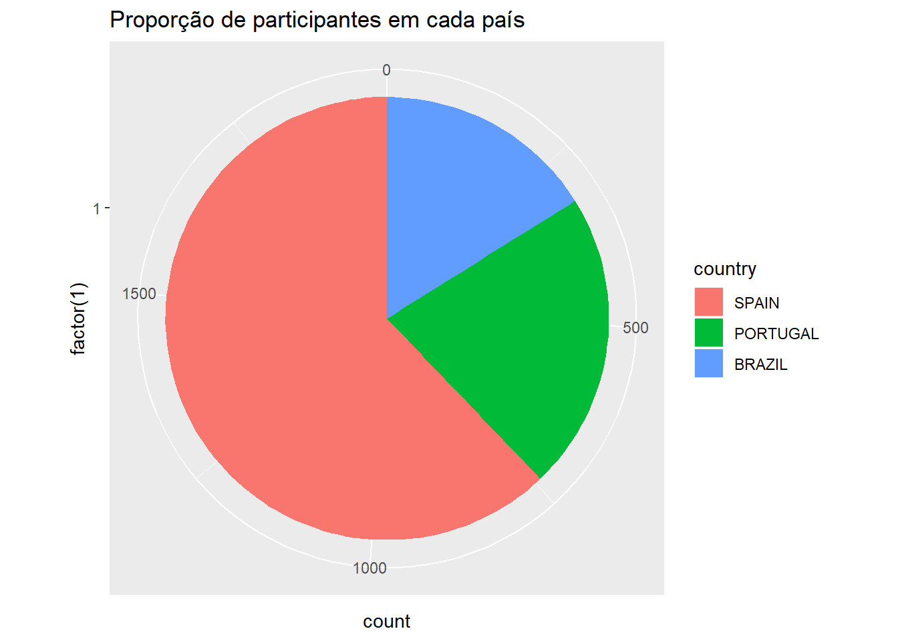
Esse gráfico permite um primeiro entendimento da distribuição dos dados. No entanto, a simples contagem de valores pode gerar uma percepção diferente caso a pesquisa tenha muitos ou poucos sujeitos. Para evitar isso, sugere-se a apresentar as proporções em vez das contagens.
A mudança da contagem para proporções pode ser feita por um recurso do pacote scales. A adição dos valores textuais às colunas tende e auxiliar a visualização.
ggplot(Dataset, aes(x = country, y = ..prop.., group = 1)) +
geom_bar(stat = "count") +
geom_text(aes(label=scales::percent(round(..prop..,2)),
y=..prop..),
stat= "count", color = "white",
size = 3, position = position_stack(vjust = 0.5)) +
scale_y_continuous(labels = scales::percent_format()) +
labs(x = "País",
title =
"Proporção de participantes em cada país investigado")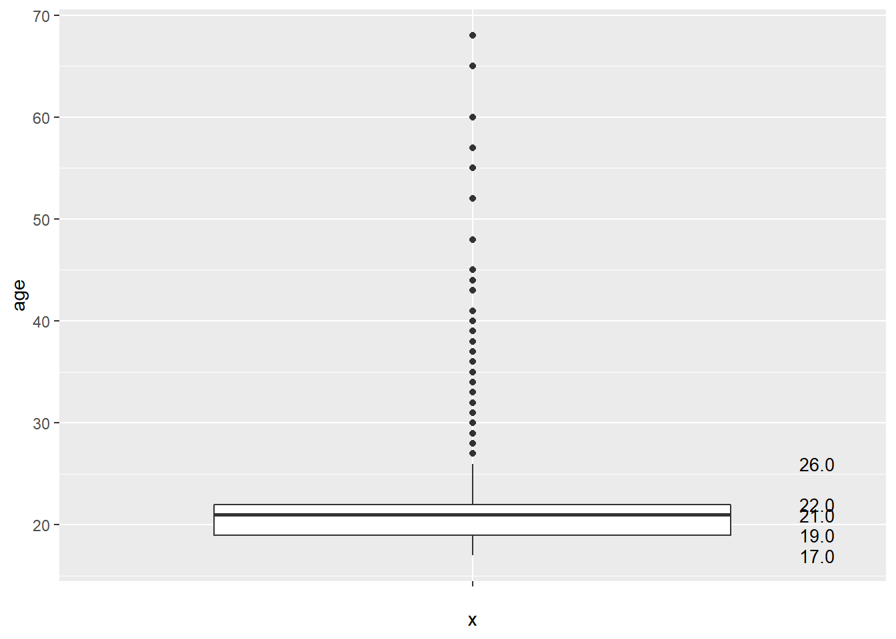
O gráfico de setor (as vezes chamado de polar, pizza ou torta) é também uma opção. O aspecto principal desse gráfico é o tamanho proporcional dos segmentos.
Dataset %>%
count(country) %>%
mutate(pct = n/sum(n)) %>%
ggplot(., aes(x="", y= pct, fill=country)) +
geom_col() +
geom_text(aes(label = scales::percent(round(pct,3))),
position = position_stack(vjust = 0.5))+
coord_polar(theta = "y") +
labs(title = "Proporção de participantes em cada país")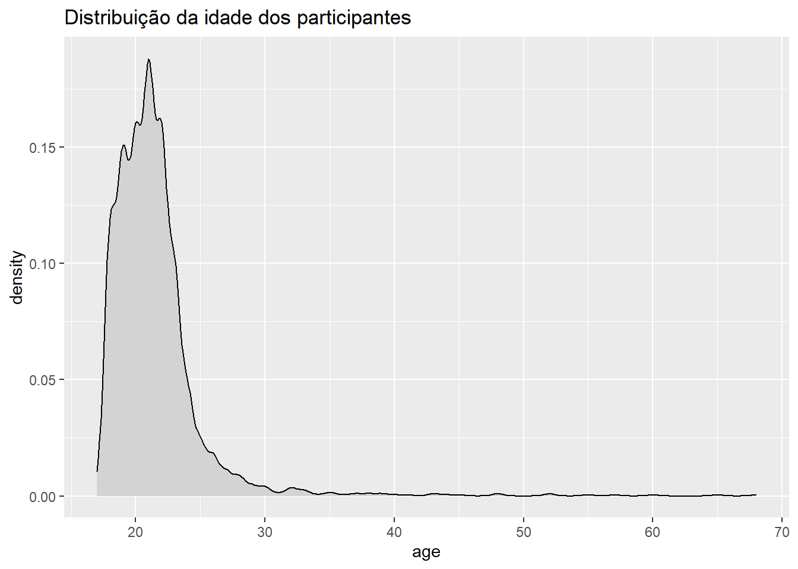
4.15 1 variável contínua
Quando uma única variável deve ser apresentada e ela é continua, os melhores gráficos para apresentar a distribuição dos dados são o histograma, densidade (kernel) e o boxplot.
Abaixo um histograma da idade dos participantes.
ggplot(Dataset, aes(x = age)) +
geom_histogram(bins = 30, color = "black", fill = "#56B4E9") +
labs(title = "Distribuição da idade dos participantes")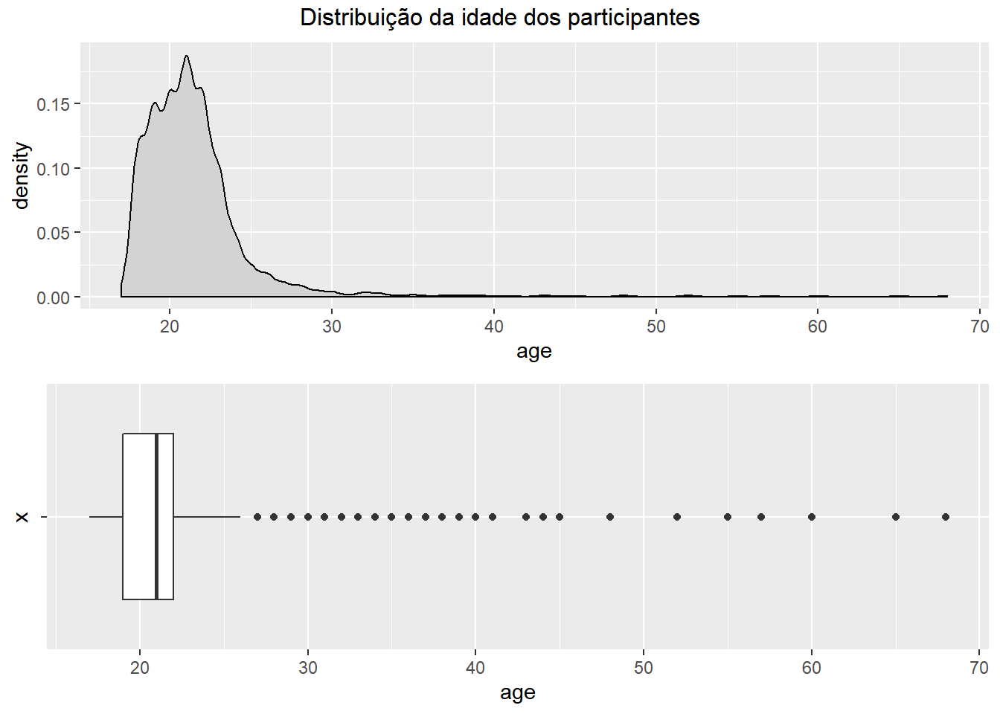
O histograma é formado por diversas barras unidas, possibilitando ter um entendimento dos intervalos entre cada um dos valores.
Abaixo um gráfico de densidade da idade:
ggplot(Dataset, aes(x = age)) +
geom_density(fill = "#56B4E9") +
labs(title = "Distribuição da idade dos participantes")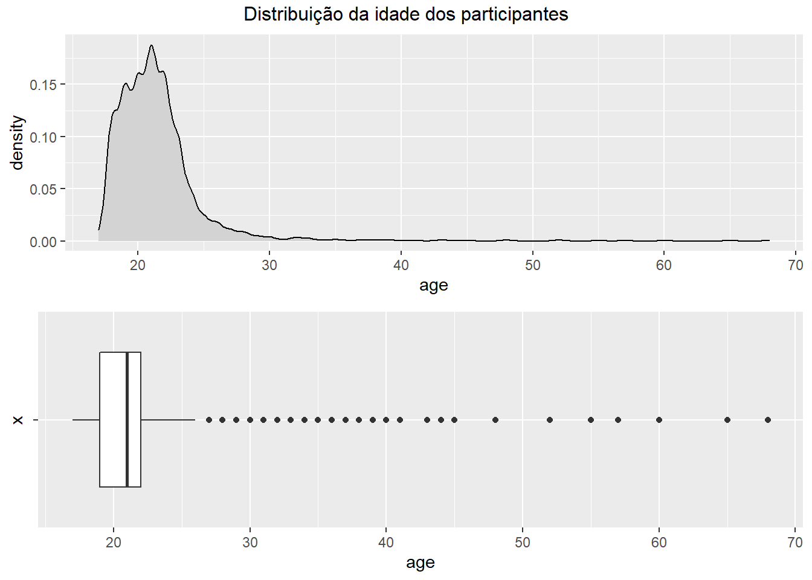
De maneira um pouco distinta do histograma, o gráfico de densidade ajusta uma curva aos dados. Com isso, este gráfico permite explorar a distribuição de probabilidade subjacente aos dados, o que será discutido futuramente.
Todas as distribuições de variáveis possuem uma localização, uma dispersão e um formato. De uma maneira mais direta, tanto o histograma como o gráfico de densidade retratam bem o formato da distribuição. Nesse caso, trata-se de uma assimetria positiva ou à direita. Esse tipo de assimetria é reconhecido pela cauda arrastada à direita.
Por sua vez, o boxplot dessa mesma variável pode ser criado:
ggplot(Dataset, aes(y = age, x = "")) +
geom_boxplot(fill = "#56B4E9") +
labs(title = "Distribuição da idade dos participantes")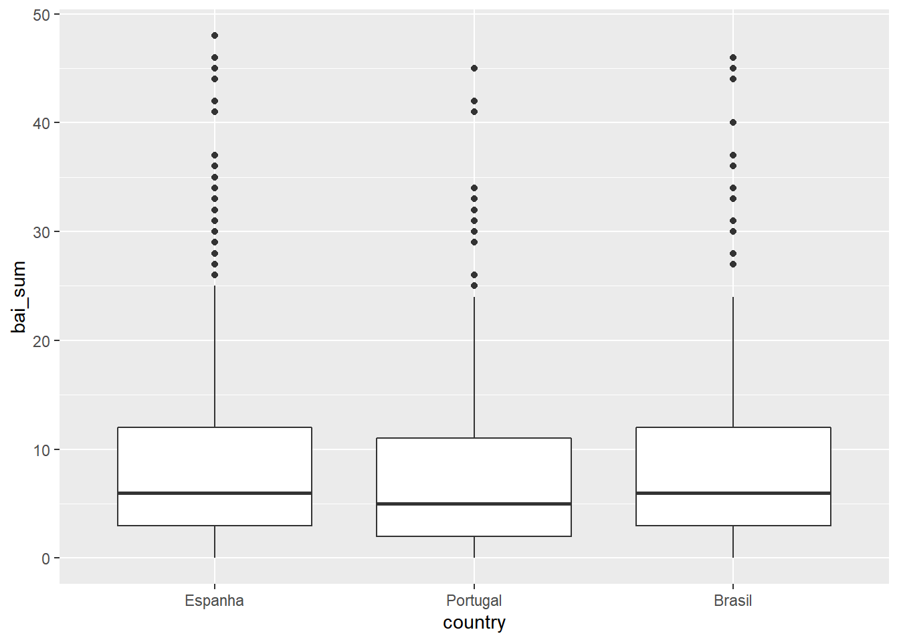
O boxplot é também chamado de “diagrama de caixa e bigode” e foi desenvolvido pelo matemático John W. Tukey na década de 1960. Este gráfico apresenta vantagens em comparação com os outros apresentados até agora, que são:
- Ele apresenta o formato da distribuição,
- Na parte inferior da caixa, ele apresenta o valor do primeiro quartil, indicando os 25% dos dados abaixo ou até ele,
- Na linha mais espessa dentro da caixa, ele apresenta a mediana dos resultados (ou segundo quartil),
- Na parte superior da caixa, ele apresenta o valor do terceiro quartil, indicando os 75% dos dados que abaixo ou até ele,
- A área da caixa apresenta 50% dos dados, que estão situados entre o primeiro e o terceiro quartil,
- As linhas abaixo e acima da caixa são chamadas de bigodes e indicam os valores mínimos e máximos sem considerar dados anômalos ou outliers,
- Os valores acima ou abaixo das linhas indicam dados anômalos.
O cálculo da linha vertical que forma o bigode do gráfico é feito por Q1 - 1.5*IQR e Q3 + 1.5*IQR. Considera-se que os valores acima ou abaixo deste ponto são anômalos. Por definição, os outliers são sempre poucos, mesmo que isso possa ser um pouco contraintuitivo nesta apresentação de agora.
Apesar de ser um pouco difícil de se visualizar ao início, os resultados apresentados nesses três gráficos são os mesmos, tal como demonstrado a seguir.
gridExtra::grid.arrange(
#Grafico 1
ggplot(Dataset, aes(x = age)) +
geom_histogram(aes(y=..density..), alpha=0.5,
position="identity") +
geom_density(alpha=.8, fill = "#56B4E9"),
#Grafico 2
ggplot(Dataset, aes(y = age, x = "")) +
geom_boxplot(fill = "#56B4E9") + labs(x = "") +
coord_flip(),
top = "Distribuição da idade dos participantes" #título
)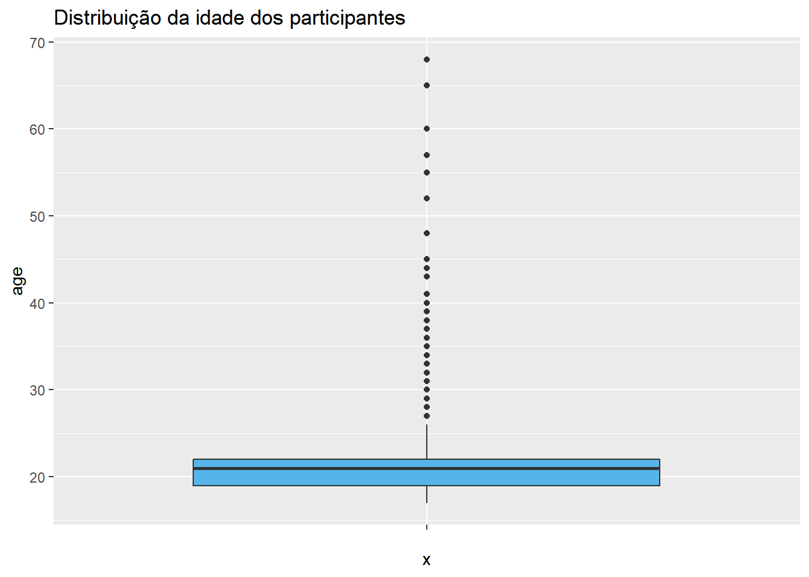
4.16 2 variáveis com VI discreta (e VD contínua)
Quando duas variáveis são apresentadas, os gráficos permitem explorar diferenças entre grupos ou relação entre variáveis. Quando a VI é discreta, gráficos de barras, colunas ou boxplots apresentam as diferenças entre os grupos.
O gráfico de colunas abaixo apresenta os resultados médios do Inventário Beck de Ansiedade nos 3 países investigados.
ggplot(Dataset, aes(x = country, y = bai_sum)) +
geom_bar(stat = "summary", fun = mean,fill = "#56B4E9") 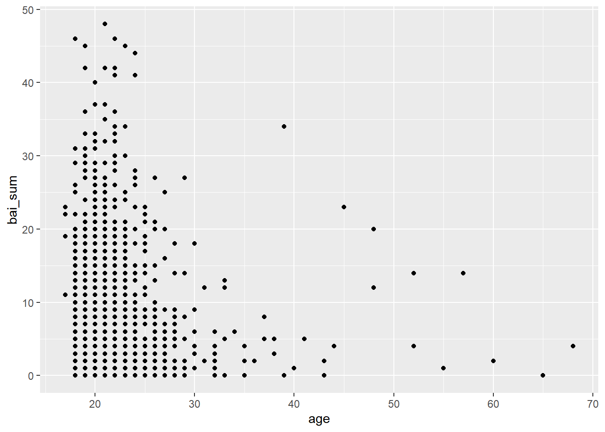
Tal como exposto, é possível adicionar outros elementos a este gráfico para que uma primeira apreensão inferencial seja possível. Nesse sentido, o gráfico abaixo apresenta também as barras de erro.
ggplot(Dataset, aes(x = country, y = bai_sum)) +
geom_bar(stat = "summary", fun = mean,fill = "#56B4E9") +
stat_summary(geom = "errorbar",fun.data = mean_se, width = .5) 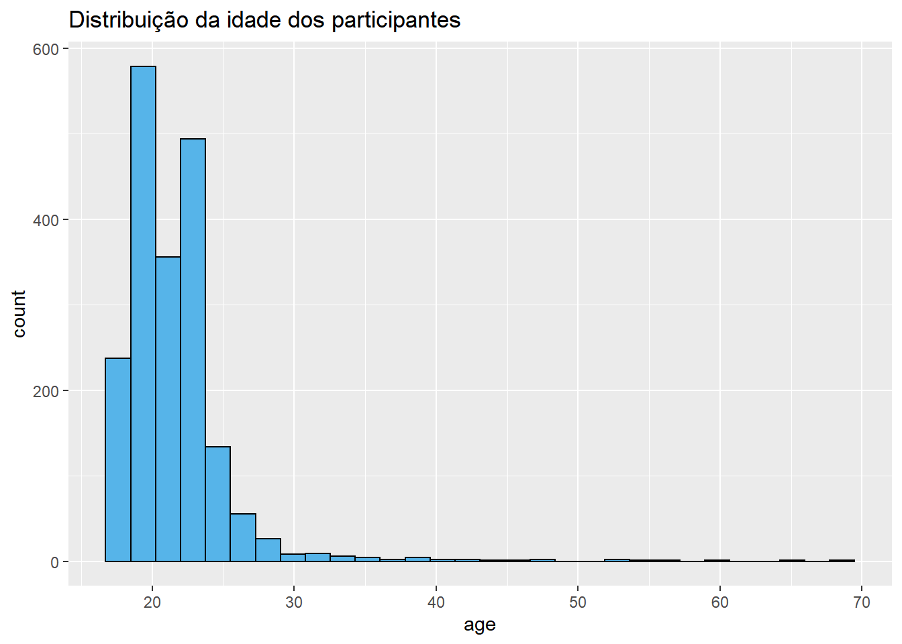
O boxplot a seguir também é um gráfico indicado. É importante notar que esse gráfico, em um primeiro momento, não traz informações sobre a média dos grupos, mas sim sobre a distribuição dos resultados. No entanto, como esse gráfico é bastante informativo, uma primeira noção inferencial já pode também ser feita.
ggplot(Dataset, aes(x = country, y = bai_sum)) +
geom_boxplot(fill = "#56B4E9")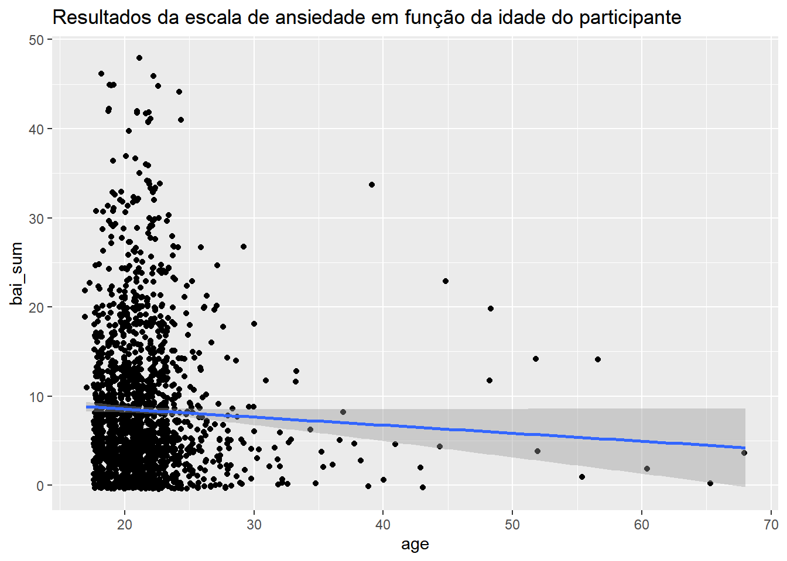
4.17 2 variáveis com VI contínua (e VD contínua)
Quando tanto a VI como a VD são contínuas, os gráficos apresentam a relação entre as variáveis. Tanto o gráfico de pontos como o de dispersão são indicados, uma vez que eles são virtualmente idênticos No ggplot, o argumento geom_point (à esquerda) e geom_jitter (à direita) são possíveis.
gridExtra::grid.arrange(
#Grafico 1
ggplot(Dataset, aes(x = age, y = bai_sum)) +
geom_point(color = "#56B4E9"),
#Grafico 2
ggplot(Dataset, aes(x = age, y = bai_sum)) +
geom_jitter(color= "#56B4E9"),
nrow=1
)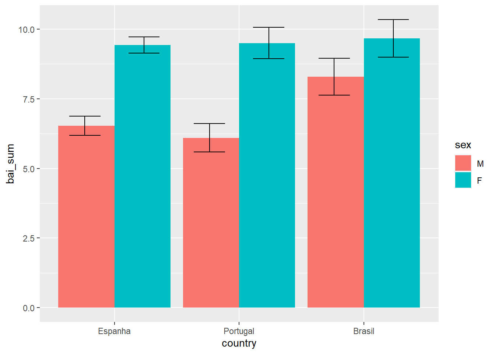
De maneira análoga aos elementos extras que podem ser apresentados em gráficos com VIs discretas, uma reta de regressão amostral (FRA) costuma ser adicionadas em gráficos em que a VI é contínua. Essa reta oferece uma primeira apreensão inferencial. No capítulo sobre modelos de regressão, esse conceito será novamente revisitado. A seguir, segue um exemplo.
ggplot(Dataset, aes(x = age, y = bai_sum)) +
geom_jitter(color = "#56B4E9") +
geom_smooth(method = "lm")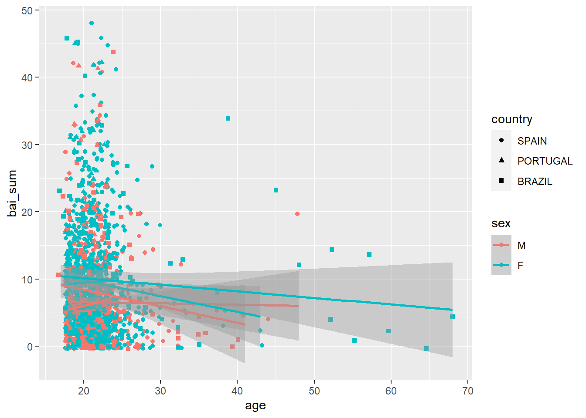
4.18 Outros gráficos e configurações
Os gráficos demonstrados costumam a ser os mais frequentes. Entretanto, é possível construir gráficos com uma maior complexidade, que reúnam diversas variáveis ao mesmo tempo. Evidentemente, a realização destes gráficos só tem sentido quando eles são relacionados ao problema de pesquisa estudado e não sobrecarreguem ou distorçam a visualização e entendimento dos resultados.
Frequentemente, essas informações adicionais são feitas pela inclusão de clusters ou agrupamentos. Isso é tanto possível em gráficos cuja VI seja discreta quanto contínua.
No exemplo abaixo, o gráfico dos resultados do Inventário Beck de Ansiedade entre os 3 países investigados (VI discreta) agora está agrupado pelo sexo do participante.
Dataset %>%
filter(!is.na(sex)) %>%
ggplot(., aes(x = country, y = bai_sum, fill = sex)) +
geom_bar(stat = "summary", position = "dodge") +
stat_summary(geom="errorbar", fun.data = mean_se,
position = position_dodge(0.95), width = .5) 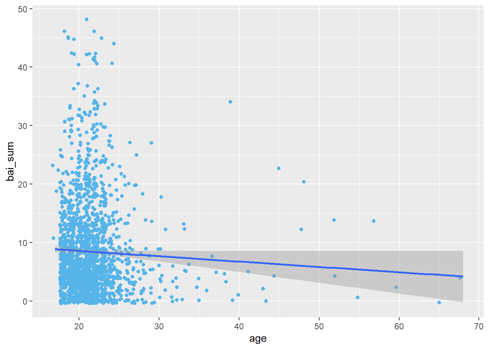
Este gráfico traz uma informação importante sobre os resultados de homens e mulheres nos três países. Além disso, as barras de erro ajudam em um primeiro entendimento de possíveis diferenças significativas. Esse conceito irá ser revisitado em capítulos subsequentes.
No exemplo abaixo, a relação entre idade e pontuação no Inventário Beck de Ansiedade está agora agrupada pelo sexo do participante.
Dataset %>%
filter(!is.na(sex)) %>%
ggplot(., aes(x = age, y = bai_sum, color = sex)) +
geom_jitter() +
geom_smooth(method = "lm") 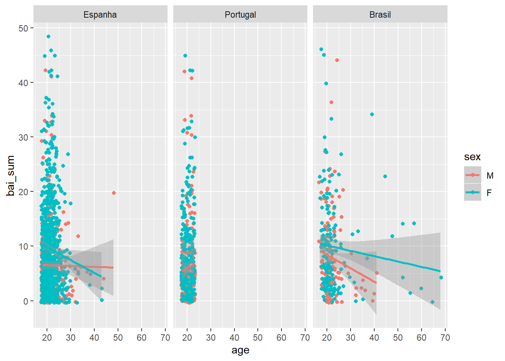
Neste gráfico de agora, é possível perceber que os a relação entre a idade e os resultados do Inventário Beck de Ansiedade é muito pequena e isso parece valer tanto para homens como para mulheres. Especialmente no capítulo de correlação, esse assunto será revisitado e parte dos termos utilizados aqui será alterado.
Por sua vez, situações em que há uma grande quantidade de variáveis apresentadas tendem a tornar os resultados difíceis de serem entendidos. O gráfico abaixo tenta traduzir essa condição, criando uma visualização de difícil entendimento justamente pelo excesso de variáveis presentes.
Dataset %>%
filter(!is.na(sex), !is.na(curso_ou_ano)) %>%
ggplot(., aes(x = age, y = bai_sum,
fill = factor(curso_ou_ano),
color = sex, shape = country)) +
geom_jitter() +
geom_smooth(method = "lm") 
Espera-se que seja possível constatar que este gráfico é totalmente inadequado. Ele é carregado de informações, permite um baixo entendimento dos resultados da pesquisa e, eventualmente, pode gerar conclusões incorretas ou viesadas.
4.19 Execução no JASP
Da mesma forma que feito no R, será necessário carregar a base para o JASP. Durante todos os capítulos, esse procedimento de importação será requisitado.
4.20 Tabelas
Após ter a base disposta no JASP, para gerar tabelas e gráficos, será necessário acessar a opção Descriptives. O JASP tratará todas as variáveis com um símbolo de diagrama de venn ou barras como categóricas e todas as variáveis com símbolo de régua como contínuas.
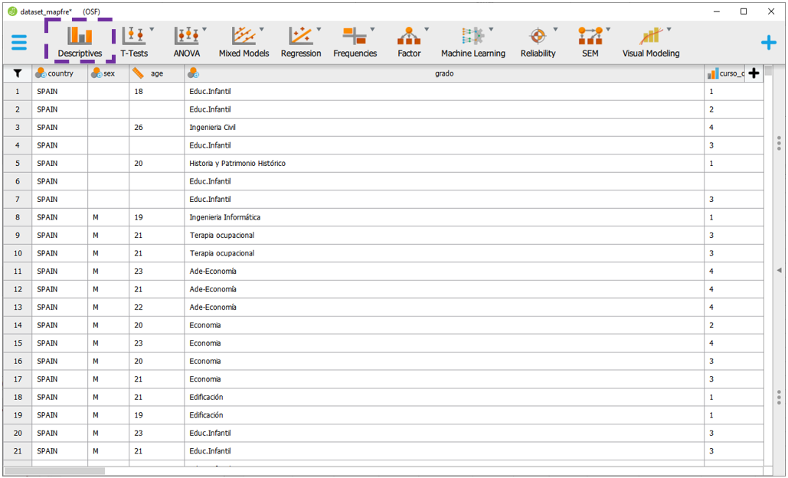
Ao clicar nesta opção, será possível eleger as variáveis que irão ser analisadas e as variáveis que irão funcionar como agrupadores. Na prática, quando há duas ou mais variáveis para serem analisadas, a lista Variables irá reunir as variáveis dependentes, enquanto a variável independente será colocada na seção Split. É importante atentar à opção Frequency tables (nominal and ordinal), que deve ser marcada quando o nível de medida da variável de interesse for nominal ou ordinal.

Isto posto, as análises feitas no ambiente R serão parcialmente reproduzidas.
Inicialmente, uma tabela descrevendo os participantes em cada um dos país é importante para apresentar ao leitor algumas das principais características da amostra. Para fazer isso, será necessário levar a variável country para a seção Variables e clicar em Frequency tables (nominal and ordinal).
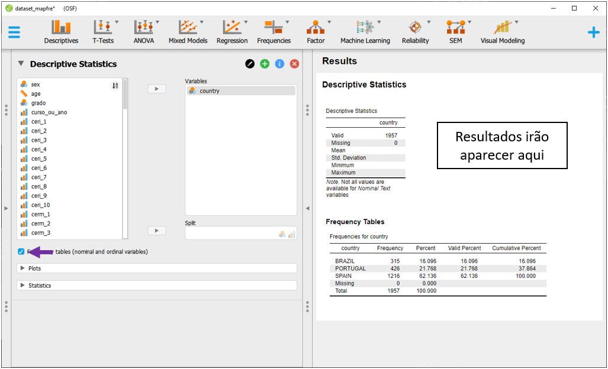
Por padrão o JASP irá apresentar as contagens (frequências absolutas) e as proporções. A parte mais à esquerda da tabela descreverá os dados considerando todos os valores presentes na base. A parte mais à direita irá apresentar apenas os dados válidos, que não consideram casos ausentes. É importante atentar que o JASP não exclui estes casos. Ele apenas não os mostra.
Para verificar a frequência e a proporção de homens e mulheres na amostra, será necessário colocar também a variável sex na opção Variables. Não é preciso retirar a variável country antes de fazer isso. O JASP irá apresentar ambas as tabelas de maneira empilhada.

Para fazer uma tabela agrupando tanto country, como sex, é necessário arrastar uma das variáveis que estão em Variables para o espaço Split.
Em uma tabela em que se descreve a contagem e porcentagem de homens e mulheres em cada um dos três países de maneira independente, é necessário preencher o Split com a variável country. O JASP aceita que se arraste a variável de um local para o outro e, ao fazer isso, todas as contas serão automaticamente atualizadas.

É possível perceber que as variáveis categóricas são descritas por suas frequências e proporções. Por sua vez, variáveis contínuas costumam ser resumidas por medidas de posição e dispersão, tal como a média e o desvio-padrão. Como exemplo, para calcular tais medidas estatísticas dos valores do BDI e do BAI em função do país do participante, é necessário deixar a variável country em Split e levar as variáveis bdi_sum e bai_sum para Variables.

Dessa vez, não é necessário ativar a opção Frequency tables (nominal and ordinal). O símbolo de régua ao lado das variáveis bdi_sum e bai_sum indicam que elas são contínuas. O símbolo de diagrama de Venn ao lado de country, por sua vez, indica que ela é categórica.
Para fazer essas análises considerando sex como agrupador, será necessário substituir country por sex no espaço de Split.

Nesta versão do JASP, não é possível colocar duas variáveis como agrupadoras. Dessa maneira, a reprodução das tabelas feitas anteriormente no ambiente R é apenas parcial.
4.21 Gráficos
O JASP é um excelente programa para gerar gráficos. Tal como previamente apresentado, a criação de um gráfico apropriado dependerá da finalidade desejada, bem como da quantidade de variáveis que devem ser apresentadas e o nível de medida da VI, especialmente em análises bi ou multivariadas.
O JASP pode fazer gráficos tanto seção Descriptives como após análise de dados específicas. Na seção Descriptives, será necessário primeiro arrastar as variáveis de interesse para seus respectivos lugares e, em seguida, clicar na opção Plot.
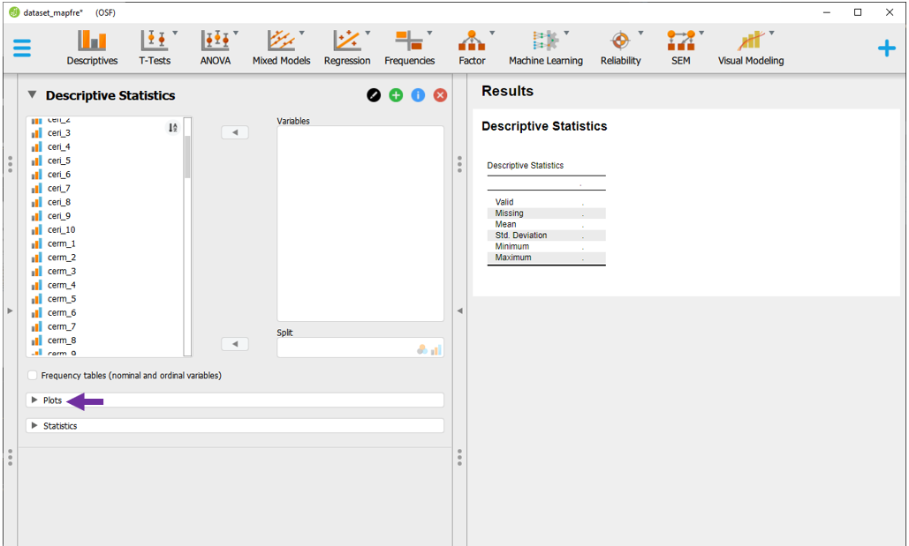
4.22 1 variável discreta
Para este tipo de variável, gráfico de barras, colunas e setor são indicados. Para realizar um gráfico de barras, é necessário colocar a variável de interesse em Variables e, dentro de Plots, clicar em Distribuiton plots. O JASP organiza as barras de ordem crescente. No exemplo abaixo, a variável country é apresentada.
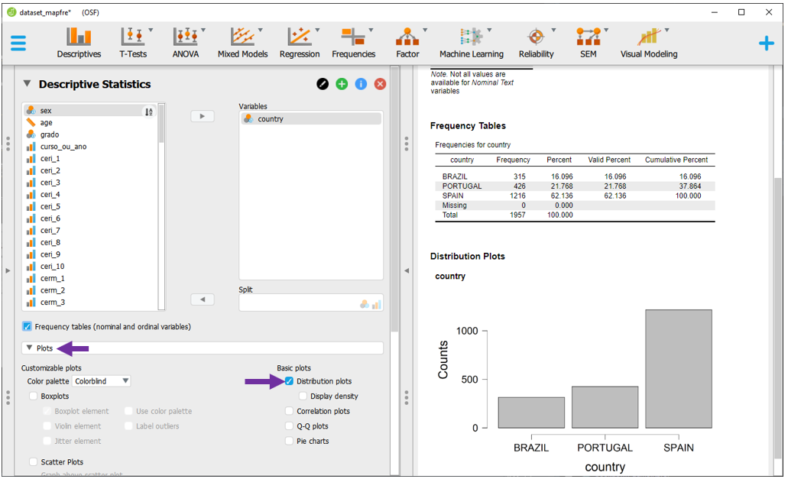
Para realizar um gráfico de setor, basta selecionar a opção Pie Charts. A visualização ocorrerá automaticamente. Uma vantagem deste gráfico é a apresentação proporcional dos elementos gráficos, em vez de contagens. Infelizmente, nesta versão do JASP, não é possível adicionar um rótulo com a porcentagem de cada categoria.

O JASP permite customizar as cores de alguns gráficos. Para fazer isso, basta clicar em Color Palette e escolher entre as opções disponíveis. Existem algumas possibilidades e recomendo optar por aquelas que permitem que pessoas com limitações visuais possam também se beneficiar. Entretanto, apenas como demonstração, o tema ggplot2 é apresentado abaixo.

4.23 1 variável contínua
Histogramas, gráficos de densidade e boxplots costumam ser indicados para variáveis contínuas. Para o JASP fazer tais gráficos, é necessário que o espaço Variables seja preenchido por alguma variável que tenha o símbolo da régua ao lado. A variável age é um bom exemplo.
Ao colocá-la neste local e marcar a opção Distribution plots, um histograma será automaticamente apresentado.

É possível adicionar a densidade de maneira sobreposta ao histograma clicando em Display density. Ambos os gráficos são importantes para verificar o formato da distribuição dos dados. Neste caso, a distribuição é assimétrica à direita.
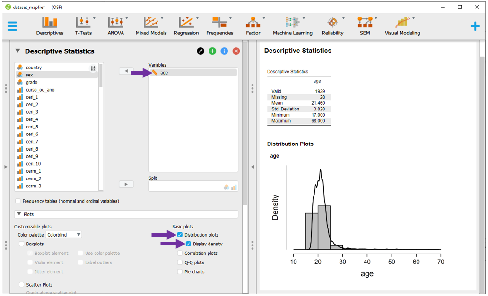
Por sua vez, o boxplot pode ser criado ao se clicar na opção Boxplots e, em seguida, Boxplot element.
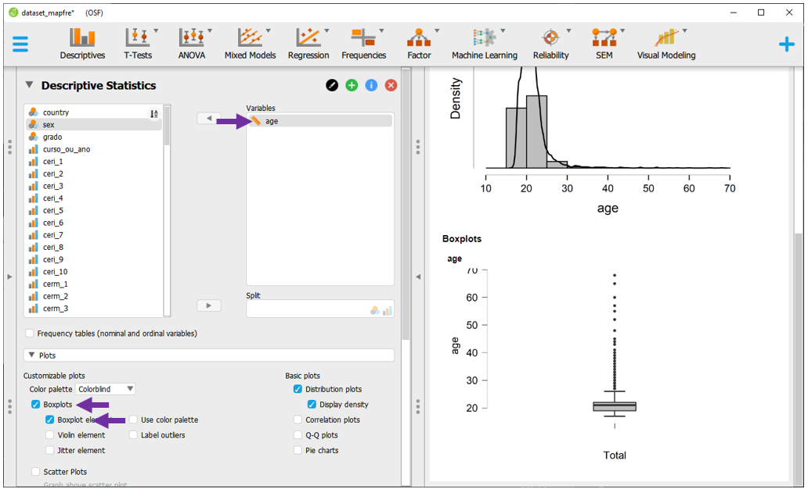
É possível customizar o boxplot. Além disso, o JASP permite criar outros gráficos que vêm sendo mais utilizados recentemente, como o gráfico de violino. Isso não será demonstrado aqui, mas para fazer isso, basta ativar as opções desejadas na seção Customizable plots.
Tal como discutido anteriormente, o boxplot apresenta vantagens em comparação com os outros gráficos apresentados até agora, que são:
- Ele apresenta o formato da distribuição,
- Na parte inferior da caixa, ele apresenta o valor do primeiro quartil, indicando os 25% dos dados abaixo ou até ele,
- Na linha mais espessa dentro da caixa, ele apresenta a mediana dos resultados (ou segundo quartil),
- Na parte superior da caixa, ele apresenta o valor do terceiro quartil, indicando os 75% dos dados que abaixo ou até ele,
- A área da caixa apresenta 50% dos dados, que estão situados entre o primeiro e o terceiro quartil,
- As linhas abaixo e acima da caixa são chamadas de bigodes e indicam os valores mínimos e máximos sem considerar dados anômalos ou outliers,
- Os valores acima ou abaixo da linhas indicam dados anômalos.
4.24 2 variáveis com VI discreta (e VD contínua)
Para situações em que há duas variáveis, a VI é tratada como discreta e a VD é contínua, gráficos de barras, colunas ou boxplots são indicados. Esses gráficos permitem verificar diferenças entre grupos. Nesta versão do JASP, apenas o boxplot pode ser feito. Para verificar, por exemplo, a distribuição dos resultados do bai_sum em função do país, é necessário levar às variáveis a seus respectivos locais e, em seguida, solicitar ao JASP o boxplot.

4.25 2 variáveis com VI contínua (e VD contínua)
Quando há duas variáveis contínuas, tanto o gráfico de pontos como de dispersão são possíveis. Esses gráficos permitem verificar o relacionamento entre variáveis. Para fazer isso, é necessário incluir ambas as variáveis de interesse para o espaço Variables. Por exemplo, age e bai_sum.

Após clicar na opção Plots, é possível tanto marcar a opção Scatter Plots, como a opção Correlation Plots.
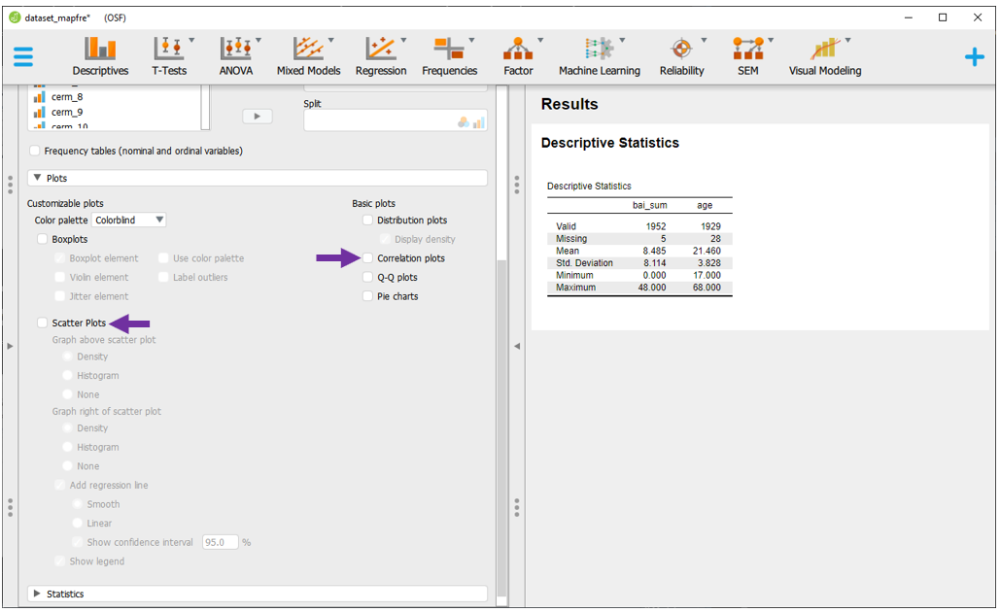
A escolha de cada gráfico é relacionada com os elementos que devem (ou não) serem incluídos na apresentação. Na opção Scatter Plot, o gráfico irá exibir os pontos dos respectivos pares ordenados das variáveis X e Y, suas densidades e também adicionar uma reta de regressão. Este último conceito será revisitado no capítulo de regressão.
Um aspecto visualmente importante é a eleição de qual variável irá em X. Com bastante frequência, deve-se inserir a VI (mesmo que teórica) em X, enquanto a VD em Y. Isso é feito alterando a ordem das variáveis em Variables.
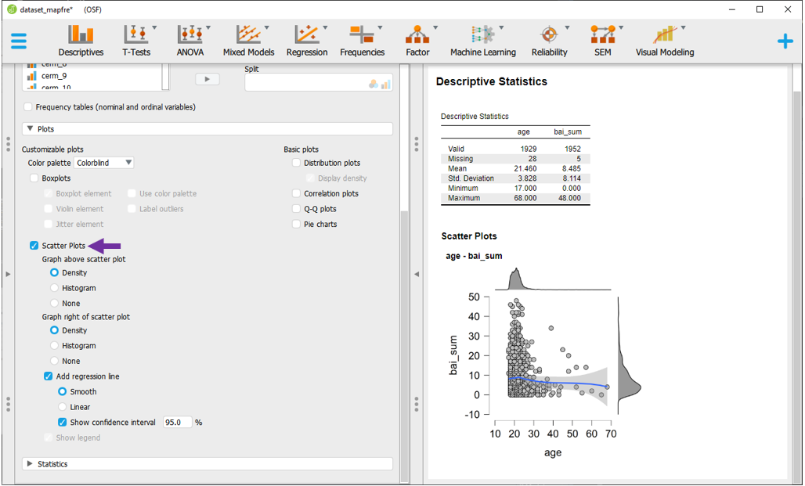
4.26 Outros gráficos e configurações
O JASP é bastante versátil na realização de gráficos e permite que mais variáveis sejam inseridas. Há também um módulo (Module) chamado Visual Modeling, que permite uma grande customização de gráficos. Para acessá-lo, é necessário clicar na cruz azul, tal como destacado no quadrado roxo da imagem abaixo.

Na lista de opções, é necessário ativar Visual Modeling. Ao fazer isso, o ícone será ativado na barra de ferramentas.
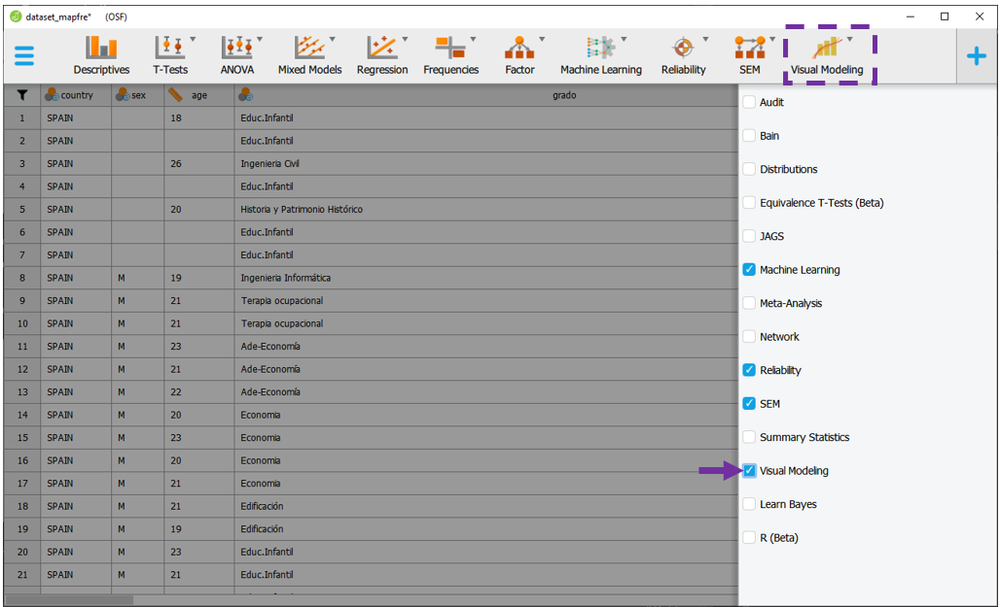
Com isso feito, dentro de Visual Modeling, a opção Flexplot oferece uma melhora substancial aos gráficos que o JASP executa. Agora é possível, por exemplo, fazer um gráfico incluindo um cluster ou agrupamento, em que os resultados do Inventário Beck de Ansiedade são apresentados tanto em função dos países investigados, como do sexo do participante.

Uma série de outras opções e combinações podem ser feitas ao clicar em Options e Plot Labels. Elas não serão apresentadas nesta seção.
4.27 Resumo
Este capítulo apresentou os aspectos tabulares e gráficos corriqueiramente encontrados em pesquisas de Psicologia e áreas congêneres. Entre os pontos principais, estão os seguintes:
- Medidas de posição e dispersão são fundamentais na apresentação dos resultados de uma pesquisa
- Variáveis categóricas são resumidas por contagens e proporções. Variáveis contínuas por suas médias e desvios-padrão
- Tabelas e gráficos devem ser claros ao leitor, sem criar viés ou distorção dos resultados
- As tabelas são muito úteis para uma apresentação detalhada dos resultados
- Gráficos condensam um grande volume de dados de uma forma mais facilmente interpretável
- A heurística típica em gráficos solicita responder a quantidade e a natureza das variáveis a serem apresentadas
4.28 Questões
- Trata-se de um círculo dividido por fatias cujos ângulos internos são proporcionais às partes envolvidas. Este é um gráfico:
a) De colunas
b) Histograma
c)De Setor
d) Boxplot
e)Barras - É uma medida de posição para variáveis propriamente numéricas e que é obtida somando-se todos os valores observados e dividindo-se o resultado pelo número de observações
a) Mediana
b) Média
c) Moda
d) Desvio-padrão
e) Amplitude interquartil - (ENADE, Biomedicina - 2010) Para apresentarem gráficos dados referentes à distribuição de frequências de um grupo de medições, pode-se aplicar um modelo semelhante ao estabelecido na figura abaixo, na qual o pesquisador verifica a variação de anticorpos em relação a uma coorte populacional específica.
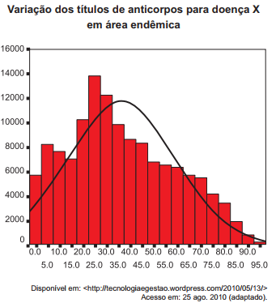
a) Gráfico de setores, que demonstra a variação de anticorpos na abscissa Y e de população na ordenada X.
b) Histograma, que demonstra variações de anticorpos na abscissa X e de população na ordenada Y
c) Gráfico de tendência central, que demonstra variações de anticorpos na abscissa X e de população na ordenada Y.
d) Gráficos de dispersão, que demonstra a tendência central das médias de concentração dos valores de anticorpos na população.
e) Gráfico de linhas, que demonstra a tendência central baseada na mediana das concentrações de anticorpos na população.
Gabarito: 1-c; 2-b; 3-b